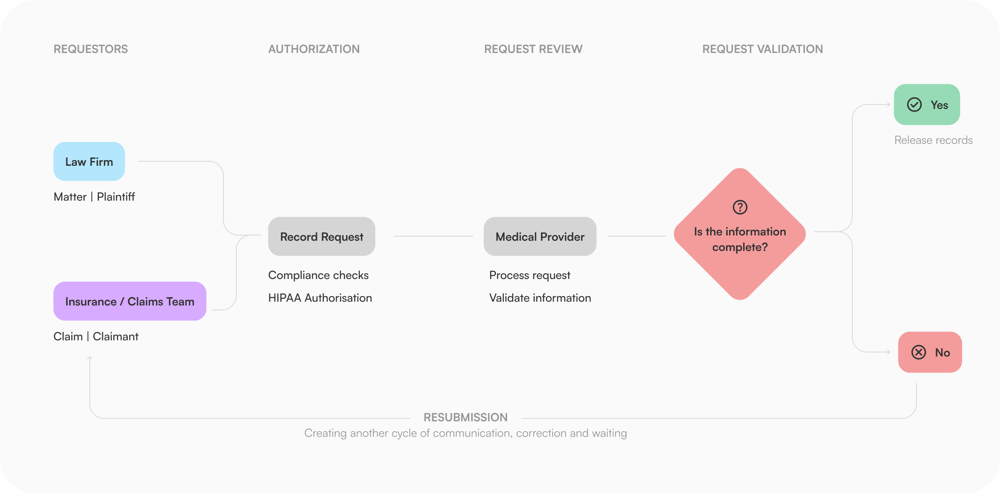
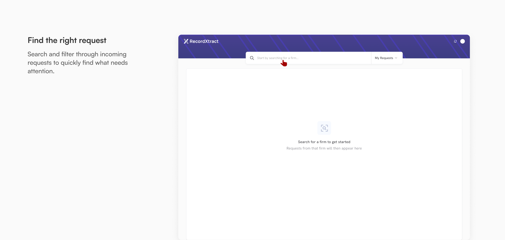
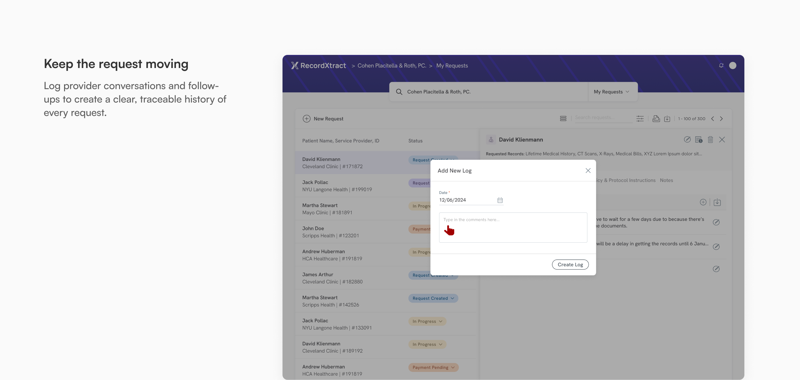

Medical records are critical evidence across insurance claims and legal matters. Yet retrieving them often requires a chain of requests, follow-ups, authorizations and document exchanges between organisations.
Uncovering the problem
To understand where the process was breaking down, we spoke with the people involved at different stages of a record request - including legal teams, insurance stakeholders, and medical record providers.
Mapping their workflows revealed that what appeared to be a simple request was actually a chain of handoffs, follow-ups, and dependencies. Missing information could stall a request, while the lack of visibility meant teams often had to chase updates through calls, faxes, emails, and other disconnected channels.

How might we make medical-record retrieval transparent, trackable and actionable across multiple stakeholders
Design principles
Make request progress visible
Users shouldn't need to call a provider to understand where their request stands.
Keep information contextual
Don't make users hunt through documents and requests to understand what belongs to which case or person.
Compliance without complexity
Regulatory requirements shouldn't force users to navigate a complicated experience.
The solution
A single workflow for the entire retrieval lifecycle - from initiation to completion. The platform gave stakeholders a shared view of request progress, surfaced the context and actions needed at each stage, and brought supporting workflows into the same experience.


Outcome
By bringing request tracking, activity history and billing into a single digital experience, stakeholders spent less time chasing updates and managing requests across disconnected channels - and more time acting on the information they needed.
Reduction in retrieval time
40%
Reduction in reporting time
15%
Reach out for full-time jobs, freelance projects, design advice or just to say hi!